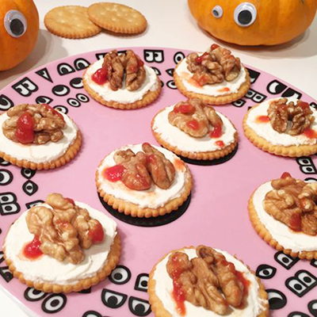

Les ingrédients
- des biscuits apéritifs type crackers
- du fromage frais à tartiner
- des cerneaux de noix
- de la sauce tomate
La recette
- Tu dois commencer par vérifier si tu as tout ton équipement pour partir à la chasse aux zombies.
- Étale devant toi le nombre de crackers correspondant au nombre de cerneaux de noix dont tu disposes et étale harmonieusement une noisette de fromage frais sur chacun d'eux.
- Déposes un cerneau de noix sur le fromage fraichement étalé.
- Avec une petite cuillère, fais tomber quelques gouttes de sauce tomate sur chaque cerveau de zombie.